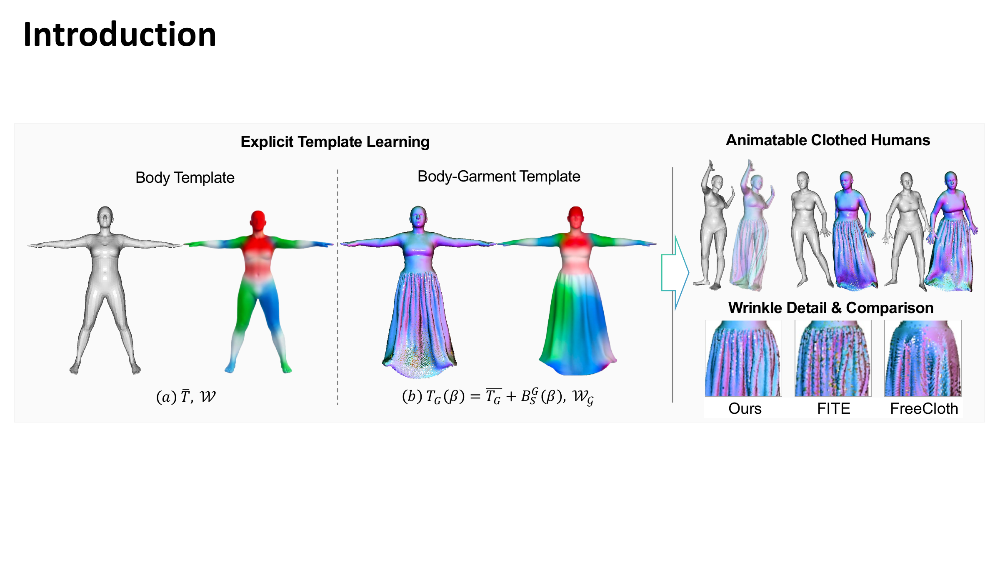
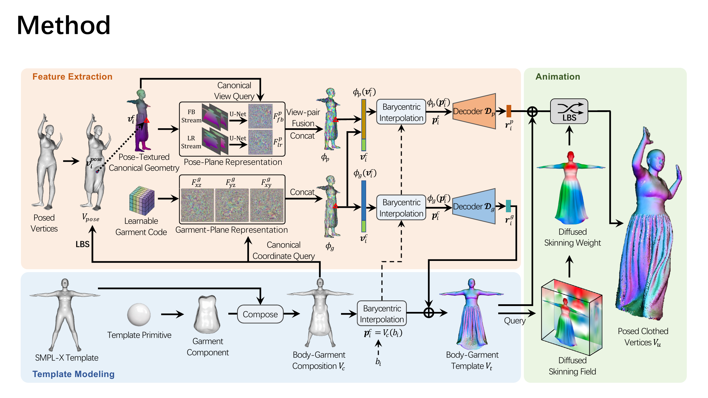
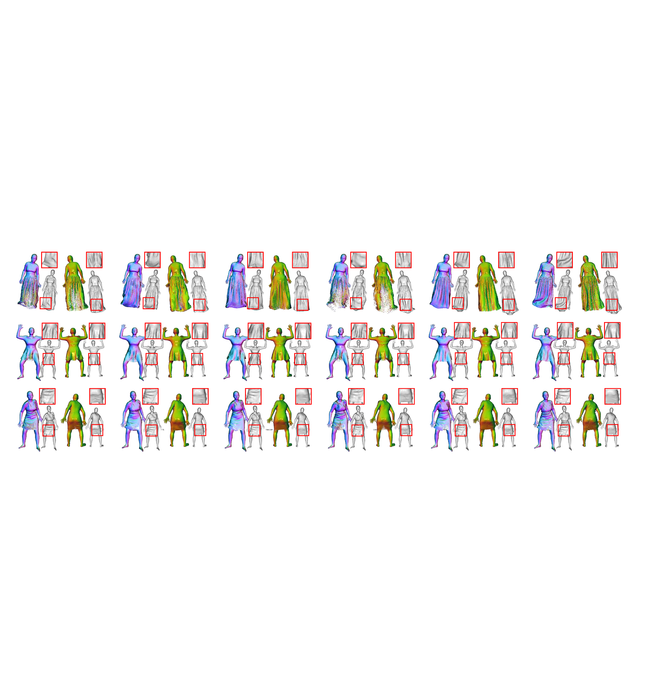
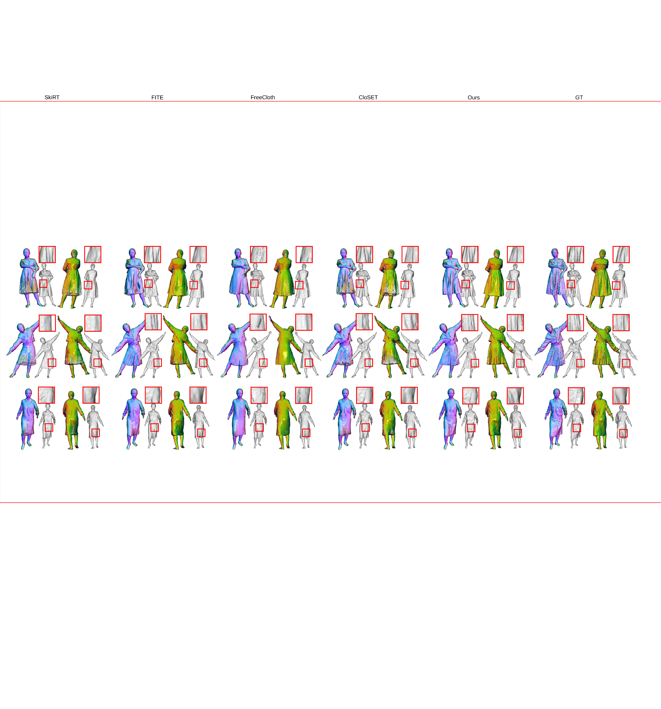

Modeling animatable clothed humans is especially difficult for loose garments whose surfaces deviate substantially from the minimally clothed body. ETCloth augments a SMPL-X body template with an explicit garment Component to form a unified body-garment canonical support. On this support, it learns garment-related geometry and pose-dependent wrinkle displacements in a disentangled manner. A continuous diffused skinning field transfers the learned garment template coherently to posed space, while Garment-Plane and Pose-Plane representations provide feature-aligned conditions for canonical geometry and pose-dependent deformation. Experiments on synthetic and real-captured clothed-human datasets show that ETCloth produces more faithful silhouettes, cleaner local geometry, and more plausible wrinkle details for challenging loose clothing.

ETCloth builds a unified canonical support by combining the SMPL-X body with an explicit garment Component. The canonical branch models garment-related geometry, while the pose branch models compact pose-dependent residuals. Diffused skinning weights animate the body-garment support coherently, and Garment-Plane and Pose-Plane representations provide canonical and pose-aligned features.


ETCloth recovers cleaner silhouettes and more plausible clothing details for loose garments across synthetic and real-captured datasets.
If you find our approach helpful, you may consider citing our work.
@article{lu2026etcloth,
title = {ETCloth: Learning Explicit Template for Human Modeling in Challenging Clothing},
author = {Lu, Zhiyuan and Lin, Siyou and Yu, Jingzhou and Deng, Qiaoling and Liu, Yebin and Zhang, Hongwen},
journal = {Under Review},
year = {2026}
}